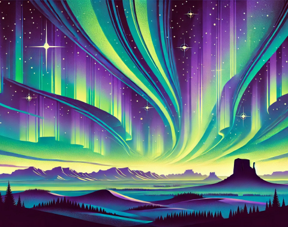

Stories

The Dance of the Spirits
This story recounts the traditional belief that the aurora borealis is a dance performed by ancestral spirits, guiding and watching over the living.
The Legend of the Northern Lights
An Indigenous elder shares a tale about how the northern lights were created by the spirits of the animals who passed on, bringing beauty to the night sky.

The Sky's Color Palette
This story explores how different colors in the aurora represent various emotions and teachings, revealing the interconnectedness of nature and humanity.
Whispers of the Wind
The wind carries whispers of ancient wisdom, guiding travelers through cold nights and reminding them of the stories told by their ancestors.